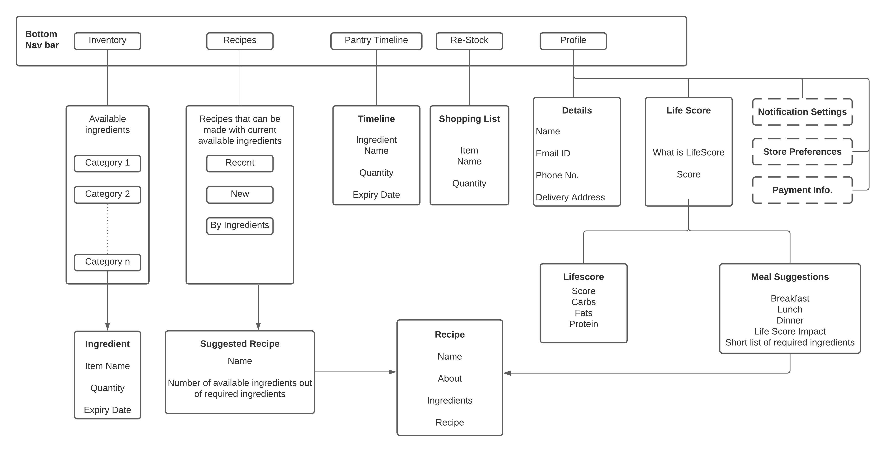
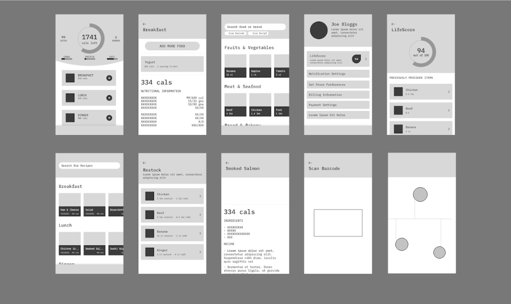

Overview
Frima is a mobile application that to make the process of managing pantry more accessible and welcoming. Encouraging users to eat fresh, reduce food wastage and to make them feel like they are making a change.
Complex inventory management often becomes a pain-point for the end user. To overcome this issue, the designed solution suggests receipes using available ingredients, rewards user through 'Life Score' and presents numerical information through visual elements thus making the overall experience of managing a pantry enjoyable.
Information
4 Member Semmester Project - Info. & Interaction Design @ RIT
Duration
Sep. - Nov. 2020
Role
Worked on every aspect of the project, Prototyping, User Reasearch, User Testing
Process

Project Focus
UN’s Food and Agriculture Organization has estimated that the carbon footprint associated with wasted food worldwide each year is more than 3 billion tons of carbon dioxide equivalent. In the U.S. as much as 40 percent of the nation’s food supply may end up wasted along varoioud points in supply chain. The U.S. Government Accountability Office reports that much food waste comes from consumers’ misinterpretation and ignoring of the product date labels. An organization called ReFED — a group of businesses, nonprofits and other organizations suggests that tracking and standardizing system for expiry date labeling is one major way to fight unnecessary food loss, with the possibility of diverting nearly 400,000 tons of wasted food each year. source
Using an app to create a virtual inventory of what items are present and when they were added to aid in our goal to alert you as food items begin to spoil to curb the problem of food going to waste. Our goal is to make the process of managing pantry more accessible and welcoming, making the user feel like they are making a change by reducing food wastage. With the goal in mind :
Contextual Inquiry
We followed Rapid Contextual Design guide by Holtzblatt, Wendell, and Wood and executed it in digital form using Miro.
The contextual inquiry was collection of in-person and online semi-structured interviews. The interviews aimed at understanding users expectations from an app like this and what they think is the biggest hurdle that will keep them from using such an app regularly.
There were 16 interviews in total used for affinity mapping.
Interview Demographic
Age : 19 years - 45 years
Majority of them were graduate or under graduate students. Conducting Interviews. Our team conducted interviews on various individuals with a particular set of questionnaire as listed below. Notes and Cards were drawn out of each of the interviews and important points were highlighted.
Affinity Mapping
Around 275 cards were considered for the affinity mapping process. Interpretation The following can be interpreted from the data generated by affinity mapping
Most of users find cooking to be a task
Would like to try new recipes if they are effortless
Users shop either once or twice a week
Users do not prefer auto-renewal
Every user does try to minimize waste to some capacity


{kind=link}
{kind=link}
Low Fidelity Prototype
Information Architecture
Considering requirements of each persona and then integrating them with our goals for the app we generated a list of required information. This information was organized, connected and grouped in different ways to consider the pros and cons of each structure before finalizing the information architecture for the prototype.
Infomration Architecture
Use Cases
After thorough competition analysis and multiple discussions the team came up with a use cases that would directly
influence the design of paper prototype.

Use Cases
Lo-Fi Prototype Wireframes
Skecting out screens that cover the data shown in information architecture 
{kind=link}
Lo-Fi Wireframes
High Fidelity Prototype
{kind=link}
User Testing
We approached the same user whom we had interviewed for contextual inquiry. Every User was tasked with navigating the app based on use cases.
Life Score was not clear enough to the users
Users wanted to customize the recipes
Users had trouble finding the button to restock utilized items
Users wanted to see expiry of items without having to read through all the text
Changes based on above feedback
• Using icons to better depict data
• Change of visual language of buttons : Making the buttons more visible.
• Life Score: Impact of the life score on every meal rather than just the overall score.
• Customization of the Recipes: Customization option for recipes to give more control to the user.
• Button for adding utilized items for restock
• Manual entry button: Manual entry button after scanning of receipt to give users more options.
• Color coding for “number of days until expiry” : eg. 1-2 days in red, 3-4 days in yellow, >4 green.
High Fidelity Prototype
Updated Prototype Version
Final prototype redesigned according to user testing feedback
Track Ingredients Timeline
View all available ingredients at a glance. Compare their expiry date and quantity.
Increase LifeScore
Eat fresh and health to improve lifescore. Meals have lifescore rating according to their nutritional value.
{kind=link}
{kind=link}
{kind=link}